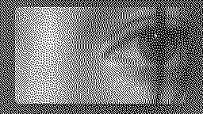
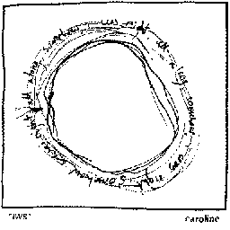

caroline
caroline are an 8-piece band from London. their 2022 debut album is an all-time favourite. they composed Bergensbanen collaboratively in pandemic isolation and in production was the first time hearing all of it together. they perform in a circle and they all sing, often just one or two chords back and forth with little snippets of lyrics, iPhone memo interludes, played back through a distorted amps in giant halls.
Tell Me I Never Knew That feat. Caroline Polachek
tab by patrickt900.
tuning: C A D G B e
[Intro] C|--x-------------|----------2-0---| A|--3-------------|--2---2---------| D|--2-------------|----4-----------| G|--0----0-2---2--|--------0-------| B|--1-p0-----3----|----------------| e|--x-------------|----------------| [Guitar 2 chords] C C(add9) B5 C|--x--------x--------x------------| A|--3--------3--------2------------| D|--2--------2--------4------------| G|--0--------0--------0------------| B|--1--------3--------0------------| e|--x--------x--------x------------| The right time I don't even know if I'm alive (Know the right time) But I don't wanna be somebody else (At the right time) Maybe I don't wanna be anyone (At the right time) I don't wanna be somebody else The right time I don't even know if I'm alive (Know the right time) But I don't wanna be somebody else (At the right time) I don't wanna be anyone (At the right time) I don't wanna be somebody else How many are they? I never told them (Tell me, I never knew that) Sink down, unfolding (Tell me, I never knew that) Don't go, I'm holding (Tell me, I never knew that) Press on, press on him (Tell me, I never knew that) Two times I told them Now, I know your mind Now, I know your mind It always has been It always will be It always has been It always will be It always has been It always will be It always has been It always will be It always has been It always will be It always has been It always will be It always has been It always will be It always has been It always has been It always has been It always has been It always happens It always happens It always happens It always happens It always happens It always happens It always happens It always happens It always happens This always happens This always happens This always happens This always happens This always happens This always happens This always happens This always happens This always happens It always will be It always will be It always will be It always will be It always will be It always will be It always will be It always will be It always will be
IWR
tuning: C A D G B d
C |-2-----------0 A |---0--(0)------3 D |-----4---4-2-----2 G |-----0---0-0 B |- d |- somehow I was right all along do you wake up with an old set of handlebars between your fingers?